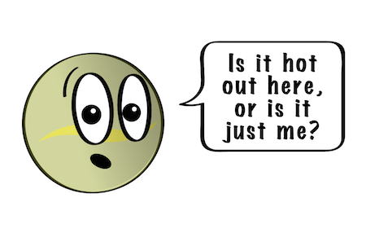

|
|
Content | Contact us | Gallery |
|
|
Content | Contact us | Gallery |
|  |
Even though Venus isn't the closest planet to the sun, it is still the hottest.
It has a thick atmosphere full of the greenhouse gas carbon dioxide and clouds made of sulfuric acid. The gas traps heat and keeps Venus toasty warm. In fact, it's so hot on Venus, metals like lead would be puddles of melted liquid. |

|
|
Venus looks like a very active planet. It has mountains and volcanoes. Venus is similar in
size to Earth. Earth is just a little bit bigger. |
||
|
Venus is unusual because it spins the opposite direction of Earth and most other planets. And its
rotation is very slow. It takes about 243 Earth days to spin around just once. Because it's so close to the sun, a year goes by fast. It takes 225 Earth days for Venus to go all the way around the sun. That means that a day on Venus is a little longer than a year on Venus. |
||
|
Since the day and year lengths are similar, one day on Venus is not like a day on Earth. Here, the sun
rises and sets once each day. But on Venus, the sun rises every 117 Earth days. That means the sun rises two times during each year on Venus, even though it is still the same day on Venus! And because Venus rotates backwards, the sun rises in the west and sets in the east. |
|
As the closest planet to Earth, Venus has been a prime target for early interplanetary exploration. It was the first planet
beyond Earth visited by a spacecraft (Mariner 2 in 1962), and the first to be successfully landed on (by Venera 7 in 1970). Venus's thick clouds render observation of its surface impossible in visible light, and the first detailed maps did not emerge until the arrival of the Magellan orbiter in 1991. Plans have been proposed for rovers or more complex missions, but they are hindered by Venus's hostile surface conditions. |
|
|
As one of the brightest objects in the sky, Venus has been a major fixture in human culture for as long as records have existed. It
has been made sacred to gods of many cultures, and has been a prime inspiration for writers and poets as the morning star and evening star. Venus was the first planet to have its motions plotted across the sky, as early as the second millennium BC. |
|
|
The astronomical symbol for Venus is the same as that used in biology for the female sex: a circle with a small cross beneath.
The Venus symbol also represents femininity, and in Western alchemy stood for the metal copper. |